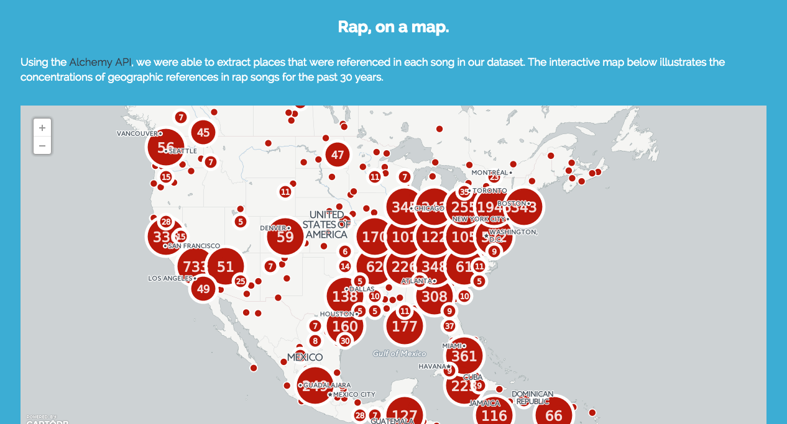
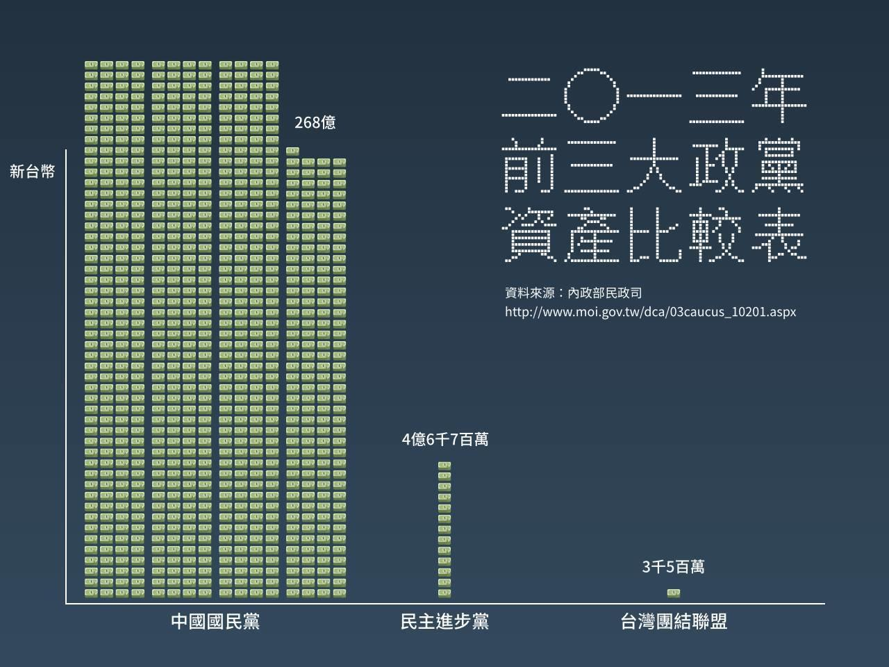

Hello World
CodeTengu Weekly 碼天狗週刊
CodeTengu Weekly 會在 GMT+8 時區的每個禮拜一早上 10:00 出刊，每一期會從目前的 curator 名單中選出三位來負責當期的內容，每一位 curator 各自負責不同的領域，如果你在這一期沒有看到自已感興趣的東西，說不定下一期就會有了。
你也可以瀏覽一下前幾期的內容，有價值的東西是不會過時的。
以下是目前的 curator 陣容：
- @vinta - I failed the Turing Test - 無法通過圖靈測試的程序員
- @saiday - Imnotyourson - 捷運飲食推廣委員會
- @tzangms - Oceanic / 人生海海 - 衝動型購物
- @fukuball - ImFukuball - 最近交了一個很正的女朋友，大家都很生氣
- @wancw - 求職中的 Full-stack Developer，意者內洽
- @adamp33 - 看棒球才是正職，副業是前端工程師
- @kako0507 - 熱愛嘗試新事物的前端工程師
- @chiahsien - Nelson
- @mingderwang
大家也可以 follow 一下 CodeTengu 的 Facebook 和 Twitter，有很多 Weekly 看不到的內容。有任何建議或疑問也可以來 Gitter 聊一聊，歡迎亂入 👺
 @vinta
@vinta
Python Cheat Sheet
作者 @crazyguitar 整理的非常詳盡的 Python 速查表，除了基礎的語法之外，還分門別類地製作了 iterator、generator 和 concurrency 相關的 cheat sheet，無論是平常用來查詢或是複習都很方便。
另外再跟大家分享一下我前陣子發現的一個新的技術週刊：FangTalk 技术周刊，好東西。
延伸閱讀：
ECMAScript 6 入门
這是阮一峰所寫的 JavaScript 電子書，專門在介紹 ECMAScript 6 的新特性，寫得真的是好。
因為最近在玩 Node.js，想說也來學一下 ECMAScript 6（又稱為 ES2015），這才發現 JavaScript 現在真的不得了了啊，ES6 多了超多新特性，例如 generator 和 promise，也終於引入了 module 和 class；ES7 甚至還有 async / await 和 decorator。
而且即便是還在提案階段的 ES7 特性，也已經可以透過 Babel 來使用了，Node.js / JavaScript 社群真的是很激進吶。
延伸閱讀：
Choosing an HTTP Status Code — Stop Making It Hard
這篇文章可以讓你知道什麼時候該用哪個 HTTP status code，而不是一律都用 200 或 404。其中最常用的應該就是 4xx 這個系列的 status code 了，畢竟如果你只是寫個 RESTful API 或網站，寫到需要在程式裡回傳 5xx，可能就太狂了。
還有很多 status code 作者沒有提到，有興趣的人可以看一下 List of HTTP status codes。而且其實有一個專門針對「內容審查」的 status code：451 Unavailable For Legal Reasons，這個代碼取自一本反烏托邦小說「華氏 451 度」，中國的朋友可以感受一下。
P.S. 如果你有在用 Alfred，可以試試這個 workflow，要查 status code 超方便。
代码合并 Merge 还是 Rebase
以前剛開始用 git 的時候，大家都會說初學者不要亂用 rebase，會出事的，但是到底會出什麼事呢？而且 merge 和 rebase 究竟有什麼差別？看完這篇文章你就會懂了。
P.S. 這個 repo 的其他文章也都不錯，大家可以看看。
mackup - Keep your application settings in sync (Mac OS X / Linux)
原本想幫 HAL 9000 增加一個「備份 Mac apps 設定」的功能，但是上禮拜就發現 mackup 這個完全就是在做這件事的工具（支援 Mac 和 Linux 平台），可以把一堆常用的 app 的設定檔同步到 Dropbox 或 Google Drive，換了一台電腦之後就可以一鍵復原，推薦大家試一試。
 @fukuball
@fukuball

R.A.P. - Rap Analysis Project
Rap Analysis Project 是一個來自 University of California, Berkeley 的有趣計劃，顧名思義就是去分析 Rap 的歌詞，利用機器學習及資料科學的技術去預測 Rap 歌詞會不會紅（進入 Billboard Top 100 排行榜內）。本篇文章將機器學習非常重要的前置作業包含文本分析、特徵值萃取寫得蠻清楚的，非常適合讓剛接觸機器學習的新手做參考。文末也把他們訓練好的模型做成服務，有沒有強者 Rapper 要把自己的歌詞貼上去讓他們預測看看會不會紅呢？
延伸閱讀：
- AlchemyAPI - 英文文本分析工具
- MAchine Learning for LanguagE Toolkit
Analyzing San Francisco Crime Data to Determine When Arrests Occur
本篇文章使用了舊金山的犯罪案件公開資料做了一些有趣的分析，透過一步一步的視覺化資料帶著讀者思考分析的過程，慢慢發現罪犯被逮捕時間分析的一些 insight，並帶出為何會有這樣的結果的一些猜想，再進一步去分析猜想是不是對的。有時這樣的分析技巧反而會是使用機器學習技術之前更需要先學會的技巧，可以多多自己訓練看待一個問題的各種面向。相關分析的程式碼內容也有放在 GitHub 上喔！
然後舊金山的 Open Data 真的是令我震驚！也做得太完善了！完全就是對開發者很友善的一個環境啊！
林軒田教授機器學習基石 Machine Learning Foundations 第八講學習筆記
在這一講中，我們了解了有雜訊的情況下，機器學習理論上還是可以運作的，並且介紹了錯誤衡量（error measure）的方式也會影響演算法挑選的結果，如果 error measure 有權重的話，那調整演算法時也要嚴謹些，直接在 error function 乘上權重並不夠嚴謹。這一講完備之後，機器學習的基礎理論已經告一段落了，下一講將開始介紹其他機器學習演算法。（我們目前只會 PLA 及 Pocket PLA）
Semantic method naming - 語意命名
命名很難，這個問題只有在你很在意命名的對象是否能夠不看文件也能懂才會發生，雖然我不是高手，但我可以說高手都很注重這件事！本篇文章提供了幾個命名類別方法的原則來讓命名能夠更符合語意：
- 勿濫用 get 開頭命名
- 方法都是在做一件事情，用 do 開頭命名沒有什麼意義
- 用 is / are 來命名回傳 boolean 形態的方法
- 對類別本身做操作的方法不需要再有操作對象是什麼的命名
- 不要在方法上描述參數來命名，除非必要
但我想大家看了這些原則，可能還是很難上手如何命名，文章中有說一個簡易的上手做法，比如在命名時為方法寫個簡短的文件，我們就可以從文件中的動詞及受詞來檢視要如何命名方法，好的命名會發現命名跟文件都可以相互解釋，這樣就代表你是在往對的方向前進了！
Laravel 5.2 is released! - Laravel 5.2 登場了！
Laravel 5.2 就在上個禮拜颯爽地登場了！底下挑了文章中我個人覺得比較有趣的新功能：
- Auth Scaffolding - 可以快速產生基礎應用的骨幹，比如登入功能
- Implicit model binding - 隱含的 model binding，不用再手動 bind model 了
- Laravel 5.2 Form Array Validation - 多值表單驗證更方便
- Middleware Groups - 可以將多個 middleware 設成群組
- Rate Limiting - 可以在 middleware 設定每個 ip 對 route 存取的速率
更多詳細的新功能就請大家點進去看囉～
 @chiahsien
@chiahsien
解決 Xcode 無法任意設定字型的問題
我最近灌了全新的電腦，當然是用最新的 OS X El Capitan + Xcode 7.1。身為一位程式設計師，初次使用 Xcode 要做的事情一定是去把字型改成自己看得順眼的等寬字體。只是不知道是 OS X 還是 Xcode 的 bug，它竟然無法正確顯示字體挑選視窗，導致我只有少少的幾種字體可以選擇。還好最後我手動去修改了佈景主題的設定，才解決這個問題。
Flickr’s experience with iOS 9
Flickr 分享他們讓 app 支援 iOS 9 的一些經驗，涵括了 Spotlight Search，Universal Links，Deep linking 跟 3D touching。如果你在開發的 app 也打算支援 iOS 9 的新功能，那絕對不能錯過這一篇。
MVVM is Not Very Good
為了解決 MVC 寫久了之後造成 view controller 肥大臃腫的問題，有許多人提出了不同的架構，MVVM 是最廣為人知的架構之一，我個人也非常喜歡用 MVVM 搭配 ReactiveCocoa 開發。本文作者卻認為 MVVM 無論是命名還是設計都不是很好，並給出了理由與替代方案。
在這篇文章中被點到名的 Ash Furrow 也寫了一篇 MVVM is Exceptionally OK 來回應作者。
延伸閱讀：
Brigade’s Experience Using an MVC Alternative
Brigade 的工程師分享他們從 MVC 架構轉到 VIPER 架構的經驗，這篇文章對 VIPER 的說明非常的簡潔明瞭，算是我看過講得最清楚的教學文章了。
延伸閱讀
- iOS Architecture Patterns — iOS App Development，這篇文章簡單說明 MVC / MVP / MVVM / VIPER 的優缺點
iOS 9 对前端做了什么？
iOS 9 推出之後，網頁前端 需要操煩 可以玩的東西變更多了，例如支援更多 CSS 屬性、支援 Split View、支援影片使用 Picture in Picture 播放模式等等。這篇文章對這些新東西做了一份完整的簡介，有在開發前端的朋友可以參考一下。
 @wancw
@wancw
How the Services team uses GitHub
GitHub 技術客服團隊運用 GitHub 的方式，例如：
- 把工作指南寫在 repo 裡面，讓新成員可以快速上手
- 用 issue 來同步彼此工作進度或是進行各種討論
- 用 pull request 處理程式碼之外的各種變更
就算不寫程式碼、不會用 Git，GitHub 仍然可以當作一個很方便的協作平台。 核心精神是讓文件、討論、工作進度都留下公開的紀錄，而且團隊成員都能參與。
Imagine a world without mocks
作者認為設計不良才會需要 Stub、Mock 以進行測試。Stub 象徵可控制的「輸入」、Mock 則是可檢驗的「輸出」；那何不改成輸出、入的可直接檢驗的資料就好了呢？作者用清楚的例子說明如何改成不需要 Stub/Mock 就可以進行測試。
Monad Design Pattern in Java
作者用 Optional、Transaction、Stream、Promise 四個例子說明 Monad 如何把頻繁重複的流程結構萃取出來成為可重複使用的元件。
Making Apps Indistinguishable from Magic
亞瑟克拉克說過：
任何足夠先進的科技都與魔法無異。
作者認為好的 App 也該讓使用者有這種感覺：
- 隱藏網路連線 —— 不要讓使用者去煩惱網路狀況、掛念哪些事情要等網路通了才能做
- 不需思考的介面 —— 簡潔易懂的介面、不會有意料外的行為、破壞性的動作要能復原
- 不必擔心電量 —— 儘量減少耗電，像 Dropbox 會在電量不足時暫停自動上傳相片
- 適應各種裝置 —— 核心功能在各種裝置與螢幕上都能使用
- 隨傳隨到的 App —— 讓使用者專注在他的目的而非你的 App
聽起來似乎過於理想，但是當作標竿來鼓勵自己也是不錯的。其中我覺得「網路連線」一項特別重要，它是讓 mobile 有別於 (desktop) Web 的重要關鍵。
延伸閱讀：
Two Legs Bad

2016 各政黨重視勞工權益評分表
明年的 1 月 16 日就是咱們的總統、立委選舉啦，如果你還沒決定要把政黨票投給哪一個政黨，你可以看看這一份「前三大政黨資產比較表」和「2016 各政黨重視勞工權益評分表」，然後感受一下自己無產階級的身份和這社會上的貧富差距，再來好好地決定你要投給哪一個政黨。
以上來自 @vinta 的分享。
芝麻信用真的是 Big Brother Data 的開始嗎?
中國政府在做的，正是將個人的獨立思考行為能力從他們龐大的人口中逐一剔除，他們也藉由這樣的一種信用紀錄的制度挑選順從他們的人，並提供他們適當的社會 生存能力繼續扶養並教育他們的下一代。這樣的手法雖高明，卻也顯示出中國共產主義政府的魔手正無孔不入的入侵並影響人民的生活。
Otaku is the New Sexy
把你打回三次元的二次元女神
本來想要回到加入時的初心，好好介紹漫畫的，無奈看到押切蓮介主筆的那款手遊オタサーの姫（廢宅的公主大人）推出了完全版，抱著人人推坑我，我推坑人人的心情，來講一下這款莫名其妙的遊戲吧！
首先，要知道押切蓮介就是在整你，他絕對不會放過這種機會的。當你推開一扇破舊的窄門，進入類似漫研的社辦，會發現裡面有一隻母豬（公主)，呃，對真的就是母豬（公主），隨著玩家收集各式各樣的阿宅（動漫宅、遊戲廢人、模型宅等等），母豬（公主）會漸漸的變成普通的中二女人。
但是，母豬（公主）會因為各種「人性化」的原因，二話不說直接退社！比如說突然厭惡起跟這些廢宅在一起的自己，或是愛上了某個廢宅，而沒有了母豬（公主）的漫研會遭到無情的解散，然後回到初始畫面，整個遊戲重來一次，但這次你的母豬（公主）變成了二代目，以此類推。其實，根據我本週的觀察，人類並不會因為這樣就棄玩（到底是有多 M！！！），而且這個遊戲，聽好囉，不要嚇到，可以課金。
根據 @vinta 現身說法，他認為這遊戲真實的反應了阿宅聚落裡本來就不會出現安心亞的事實。至於阿宅為什麼連玩遊戲都要拿三次元來虐自己，我好像有點能夠理解，畢竟二次元的母豬也是一種屬性嘛！
最後，身為熟成男生產履歷的編撰者，不是說我有多關心女人，但如果要在三次元完美重現，從芭比漸變成堀北真希是個不錯的點子。
以上來自 @autisticcat 的分享！